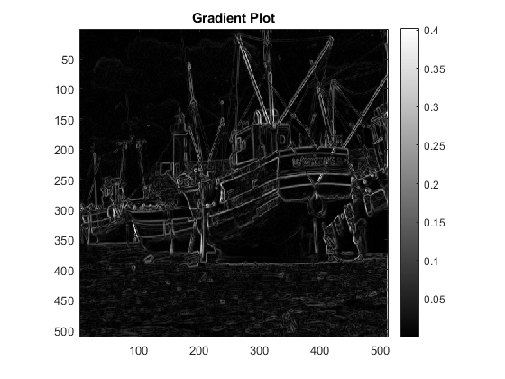

Contents
Q1
References:
1) We used nlfilter from the matlab standard documentation.
2) We used the class slides for the definition of structure tensor. The formulae for the eigenvalues could easily be derived from there.
Q1a
For the gaussian blurring, we use a 9*9 sliding window with a variance of 0.6.
Q1b
(We also plot the gradient as a sanity check)
Q1c
We note that the principal eigenvalue is large whenever there is an edge or corner, which clearly seems to match the theoretical expectations.
The secondary eigenvalue is only large when a corner is present.
Q1d
In the computation of the structure tensor, we use a 9*9 gaussian with a 0.6 variance. The free parameter k = 0.03, which is chosen such that the points which are neither edges nor corners have cornerness values close to zero and the points which are edges and not corners have negative cornerness values.
We superimpose the cornerness measure after thresholding with the original image to see the corners. The threshold value is chosen as 2e-5. The white points denote corners.
Elapsed time is 18.707299 seconds.